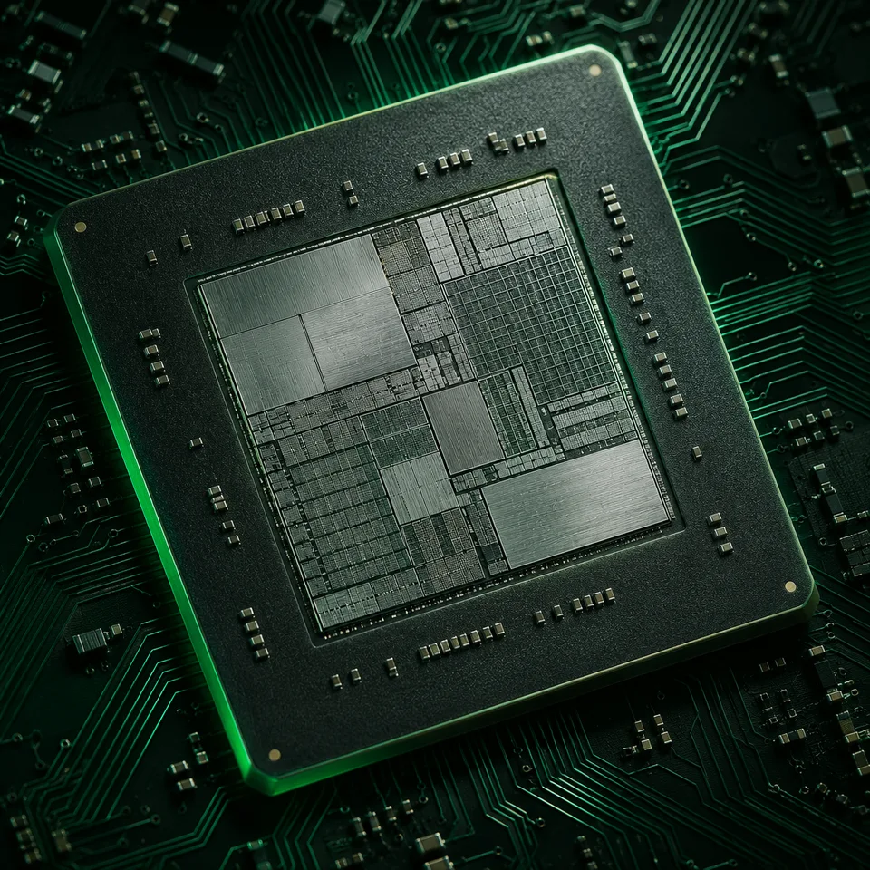

Open-source MLX benchmark suite
Benchmark LLM decoding on Apple Silicon.
Compare speculative decoding, weight precision, and KV cache limits. See the latency, memory, and quality evidence behind each run.

- Offline Metal smoke
- 6.83 s
Measured on Metal
Compare weight formats.
These runs used the same Qwen2.5-0.5B model, five prompts, and an unbounded KV cache. Q4 decoded fastest. FP16 had the lowest perplexity.
View CI run and artifactsQwen2.5-0.5B Target-only · Two runs per format
Tokens / secondHigher is better
- FP16
- 5.83
- Q8
- 8.16
- Q6
- 8.87
- Q4
- 9.42
Apple paravirtual GPU · 7 GiB RAM · Batch 1 · 4-token cap
Benchmark methodology
From configuration to evidence.
-
Define the sweep
Set precision, draft length, batch size, and cache budget in YAML. Every case maps back to a resolved configuration.
View the example matrix -
Verify greedy tokens
The target verifies each draft block. Compare the full output with a target-only run at the same precision and cache policy.
Read the decoding contract -
Inspect the records
Keep token IDs, timings, memory observations, and run identities. Regenerate the comparison report offline from saved results.
View a sample report
Quickstart
Run it on your Mac.
The bundled fixture generates its own weights from a fixed seed and runs offline after installation.
- Hardware
- Apple Silicon with Metal
- Software
- macOS 15+ · arm64 Python 3.11–3.13
git clone https://github.com/rishixgamer/mlx-spec-bench.git
cd mlx-spec-bench
python3 -m venv .venv
source .venv/bin/activate
python -m pip install '.[metal]'
# Run the fixture and render the report
export HF_HUB_OFFLINE=1 TRANSFORMERS_OFFLINE=1
run_dir="$(mlx-bench run examples/fixture.yaml --output-dir runs)"
mlx-bench report "$run_dir" --output "$run_dir/report.md"# Activate the environment and install the Metal extra first
from mlx_spec_bench import Config, ModelSpec, run
case = Config(target=ModelSpec("fixture"), batch_size=2)
result = run(case, output_dir="runs", warmups=1, repetitions=2)
assert result.status == "success"
for record in result.records:
request = result.detail(record)["requests"][0]
print(record["run_id"], request["output_ids"])